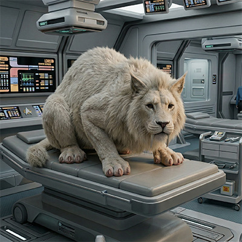

FOTO
Mascotte
Peppino
Mascotte
Mascotte
Selhat Olografico
PNG
Nome
Peppino
Qualifica
Mascotte
Razza
Selhat Olografico
Sesso
M
Peso
35 kg (incorporeo)
Altezza
0.68 m
Occhi
scuri
Pelo
bianco
Note
La dottoressa T'Mik ultimamente ha preso l'abitudine di portarlo sempre con se', forse per difendersi dalle manie di pulizia di Ernestina, o forse per convincere i pazienti riottosi a restare in Infermeria (il caso del Ferengi insegna).
Ha due affilate zanne di circa venti centimetri, ma non fatevi ingannare dalle apparenze: è poco più di un tenero orsacchiotto.